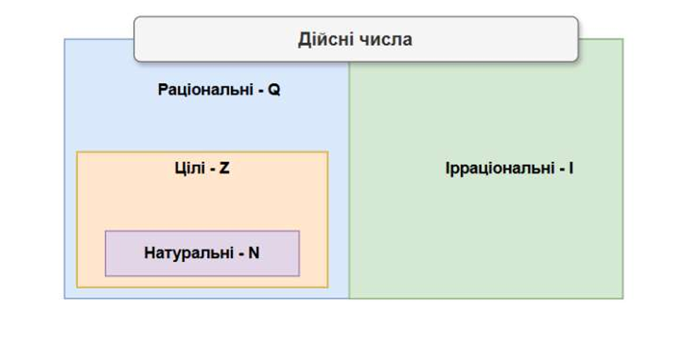

Мета заняття
Повторити множини чисел та дії з ними, навчитися спрощувати числові та буквені вирази, застосовувати формули скороченого множення для перетворення виразів.
1. Множини чисел
Основні числові множини
- $\mathbb{N}$ — натуральні числа: $1, 2, 3, 4, \ldots$
- $\mathbb{Z}$ — цілі числа: $\ldots, -2, -1, 0, 1, 2, \ldots$
- $\mathbb{Q}$ — раціональні числа: числа виду $\dfrac{m}{n}$, де $m \in \mathbb{Z}$, $n \in \mathbb{N}$
- $\mathbb{R}$ — дійсні числа: усі раціональні та ірраціональні числа
Між множинами виконується включення:
$$\mathbb{N} \subset \mathbb{Z} \subset \mathbb{Q} \subset \mathbb{R}$$
Ірраціональні числа — числа, які не можна подати у вигляді дробу $\dfrac{m}{n}$. Наприклад: $\sqrt{2}$, $\pi$, $e$.

Завдання на відповідність.
Установіть відповідність між числом (1–4) та множиною, до якої воно належить (А–Д).
Число
- $-8$
- $23$
- $\sqrt{16}$
- $1{,}7$
Множина
- А) множина парних натуральних чисел
- Б) множина цілих чисел, що не є натуральними
- В) множина раціональних чисел, що не є цілими
- Г) множина ірраціональних чисел
- Д) множина простих чисел
1. До якої множини належить число $-8$?
2. До якої множини належить число $23$?
3. До якої множини належить число $\sqrt{16}$?
4. До якої множини належить число $1{,}7$?
- 1 – Б: $-8$ — ціле, але не натуральне (натуральні — тільки $1, 2, 3, \ldots$).
- 2 – Д: $23$ — просте число (ділиться тільки на 1 і на себе).
- 3 – А: $\sqrt{16} = 4$ — парне натуральне число.
- 4 – В: $1{,}7 = \dfrac{17}{10}$ — раціональне, але не ціле.
Модуль числа
Модуль (абсолютна величина) числа $a$ — це відстань від точки $a$ до нуля на координатній прямій:
$$|a| = \begin{cases} a, & \text{якщо } a \geq 0 \\ -a, & \text{якщо } a < 0 \end{cases}$$
Наприклад: $|5| = 5$, $|-3| = 3$, $|0| = 0$.
2. Числові та буквені вирази
Числовий вираз — запис, що складається з чисел, знаків арифметичних дій і дужок. Наприклад: $3 + 5 \cdot 2$.
Буквений вираз — вираз, що містить букви (змінні) разом з числами. Наприклад: $2x + 3y$.
Значення виразу — число, яке отримуємо після виконання всіх дій.
Порядок виконання дій
- Дії в дужках
- Піднесення до степеня, добування кореня
- Множення та ділення (зліва направо)
- Додавання та віднімання (зліва направо)
Область допустимих значень (ОДЗ)
ОДЗ — множина значень змінної, при яких вираз має зміст. Наприклад, у виразі $\dfrac{5}{x - 3}$ ОДЗ: $x \neq 3$.
3. Формули скороченого множення
Ці формули — ключовий інструмент для спрощення виразів і розкладання многочленів на множники.
Квадрат суми та різниці
$$(a + b)^2 = a^2 + 2ab + b^2$$
$$(a - b)^2 = a^2 - 2ab + b^2$$
Різниця квадратів
$$a^2 - b^2 = (a - b)(a + b)$$
Спростіть вираз: $(x + 4)^2 - (x - 2)(x + 2)$
Розв'язання:
Розкриємо дужки, використовуючи формули квадрата суми та різниці квадратів:
$(x + 4)^2 - (x - 2)(x + 2) = x^2 + 8x + 16 - (x^2 - 4)$
$= x^2 + 8x + 16 - x^2 + 4 = 8x + 20$
Відповідь: $8x + 20$.
Розкладіть на множники: $9a^2 - 25b^2$
Розв'язання:
Помічаємо різницю квадратів: $9a^2 = (3a)^2$, $25b^2 = (5b)^2$.
$9a^2 - 25b^2 = (3a)^2 - (5b)^2 = (3a - 5b)(3a + 5b)$
Відповідь: $(3a - 5b)(3a + 5b)$.
4. Дії зі звичайними дробами
Звичайний дріб — це запис виду $\dfrac{a}{b}$, де $a$ — чисельник, $b$ — знаменник, $b \neq 0$.
Основна властивість дробу:
$$\dfrac{a}{b} = \dfrac{a \cdot k}{b \cdot k}, \quad k \neq 0$$
Додавання та віднімання дробів
З однаковими знаменниками:
$$\dfrac{a}{c} + \dfrac{b}{c} = \dfrac{a + b}{c}, \qquad \dfrac{a}{c} - \dfrac{b}{c} = \dfrac{a - b}{c}$$
З різними знаменниками: зводимо до спільного знаменника (найкраще — до найменшого спільного кратного, НСК):
$$\dfrac{a}{b} + \dfrac{c}{d} = \dfrac{a \cdot d + c \cdot b}{b \cdot d}$$
Множення та ділення дробів
$$\dfrac{a}{b} \cdot \dfrac{c}{d} = \dfrac{a \cdot c}{b \cdot d}$$
$$\dfrac{a}{b} : \dfrac{c}{d} = \dfrac{a}{b} \cdot \dfrac{d}{c} = \dfrac{a \cdot d}{b \cdot c}, \quad c \neq 0$$
Правило: при діленні дріб «перевертаємо» і множимо.
Скорочення дробів
Щоб скоротити дріб, чисельник і знаменник ділять на їх спільний дільник:
$$\dfrac{a \cdot k}{b \cdot k} = \dfrac{a}{b}$$
Обчисліть: $\dfrac{3}{4} + \dfrac{5}{6}$
Розв'язання:
НСК для 4 і 6 — це 12. Зведемо обидва дроби до знаменника 12:
$\dfrac{3}{4} = \dfrac{3 \cdot 3}{4 \cdot 3} = \dfrac{9}{12}, \qquad \dfrac{5}{6} = \dfrac{5 \cdot 2}{6 \cdot 2} = \dfrac{10}{12}$
$\dfrac{9}{12} + \dfrac{10}{12} = \dfrac{19}{12} = 1\dfrac{7}{12}$
Відповідь: $1\dfrac{7}{12}$.
Обчисліть: $\dfrac{8}{15} \cdot \dfrac{25}{16}$
Розв'язання:
Скоротимо множники перед множенням (це зручніше, ніж множити великі числа):
$\dfrac{8}{15} \cdot \dfrac{25}{16} = \dfrac{8 \cdot 25}{15 \cdot 16}$
Скоротимо $8$ і $16$ на $8$, $25$ і $15$ на $5$:
$= \dfrac{1 \cdot 5}{3 \cdot 2} = \dfrac{5}{6}$
Відповідь: $\dfrac{5}{6}$.
Обчисліть: $\dfrac{3}{7} : \dfrac{9}{14}$
Розв'язання:
Перевертаємо другий дріб і множимо:
$\dfrac{3}{7} : \dfrac{9}{14} = \dfrac{3}{7} \cdot \dfrac{14}{9} = \dfrac{3 \cdot 14}{7 \cdot 9}$
Скоротимо $3$ і $9$ на $3$, $14$ і $7$ на $7$:
$= \dfrac{1 \cdot 2}{1 \cdot 3} = \dfrac{2}{3}$
Відповідь: $\dfrac{2}{3}$.
Обчисліть: $\left(\dfrac{2}{3} + \dfrac{1}{4}\right) \cdot \dfrac{12}{11}$
Розв'язання:
Спочатку виконаємо дію в дужках (НСК для 3 і 4 — 12):
$\dfrac{2}{3} + \dfrac{1}{4} = \dfrac{8}{12} + \dfrac{3}{12} = \dfrac{11}{12}$
Тепер множимо:
$\dfrac{11}{12} \cdot \dfrac{12}{11} = 1$
Відповідь: $1$.
1. Обчисліть: $\dfrac{5}{8} + \dfrac{1}{4}$
2. Обчисліть: $\dfrac{3}{5} \cdot \dfrac{10}{9}$
$\dfrac{3}{5} \cdot \dfrac{10}{9} = \dfrac{3 \cdot 10}{5 \cdot 9}$
Скоротимо: $3$ і $9$ на $3$, $10$ і $5$ на $5$: $\dfrac{1 \cdot 2}{1 \cdot 3} = \dfrac{2}{3}$
Відповідь: $\dfrac{2}{3}$.
3. Обчисліть: $\dfrac{7}{12} : \dfrac{7}{4}$
4. Обчисліть: $\dfrac{2}{3} - \dfrac{1}{6}$
Обчисліть: $\dfrac{87^2 - 13^2}{74}$
Розв'язання:
Застосуємо формулу різниці квадратів у чисельнику:
$\dfrac{87^2 - 13^2}{74} = \dfrac{(87 - 13)(87 + 13)}{74} = \dfrac{74 \cdot 100}{74} = 100$
Відповідь: $100$.
4. Дії зі степенями (коротко)
- $a^m \cdot a^n = a^{m + n}$
- $\dfrac{a^m}{a^n} = a^{m - n}$, $a \neq 0$
- $(a^m)^n = a^{mn}$
- $(ab)^n = a^n b^n$
- $a^0 = 1$, $a \neq 0$
- $a^{-n} = \dfrac{1}{a^n}$, $a \neq 0$
1. До якої найменшої числової множини належить число $-7$?
2. Обчисліть: $|-9| + |4| - |-2|$
3. Спростіть вираз: $(a + 3)^2 - a(a + 6)$
$(a + 3)^2 - a(a + 6) = a^2 + 6a + 9 - a^2 - 6a = 9$
Відповідь: $9$.
4. Розкладіть на множники: $x^2 - 16y^2$
5. Обчисліть, використовуючи формули скороченого множення: $\dfrac{53^2 - 47^2}{60}$
За формулою різниці квадратів:
$\dfrac{53^2 - 47^2}{60} = \dfrac{(53 - 47)(53 + 47)}{60} = \dfrac{6 \cdot 100}{60} = 10$
Відповідь: $10$.